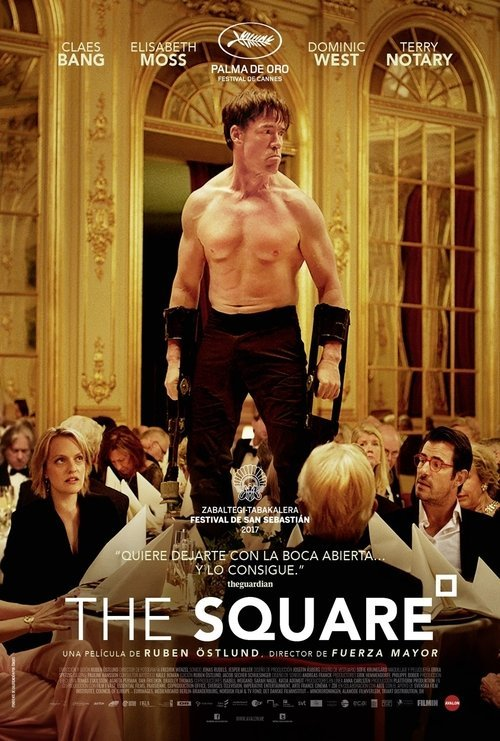

The Square (2017)
Sinopsis Rápida
¿Qué pasaría si un símbolo de altruismo se convierte en el epicentro de una crisis existencial? En 'The Square', un prestigioso curador de arte se enfrenta a su propia hipocresía cuando una campaña publicitaria ingeniosa sale terriblemente mal.
Sinopsis Detallada
Christian, un exitoso curador de arte contemporáneo, se embarca en la ambiciosa tarea de organizar una exposición sobre la instalación 'The Square', un proyecto que busca fomentar la empatía y la solidaridad. Sin embargo, la campaña de relaciones públicas que contrata para el evento termina desatando una serie de eventos caóticos y reveladores, exponiendo la farsa de la filantropía moderna. La película nos sumerge en un laberinto de ironías y situaciones incómodas, obligándonos a cuestionar nuestra propia moralidad y la naturaleza de la compasión en un mundo cada vez más desconectado. Con una mezcla inteligente de humor negro y observaciones sociales agudas, 'The Square' es una obra maestra que deja una marca indeleble en el espectador.
¿Por qué tenés que verla?
- Una sátira mordaz y relevante sobre la hipocresía de la clase artística y la sociedad moderna.
- La dirección de Ruben Östlund es magistral, creando un ambiente de tensión creciente y situaciones incómodas que te dejarán pensando.
- La película generó debates sobre la filantropía, el arte y la ética en el mundo contemporáneo.
- Excelente actuación del protagonista, que refleja la confusión y la crisis existencial del personaje.
Idea Extra
Análisis del simbolismo en 'The Square': Un estudio profundo de la instalación artística central y su significado en el contexto de la película.